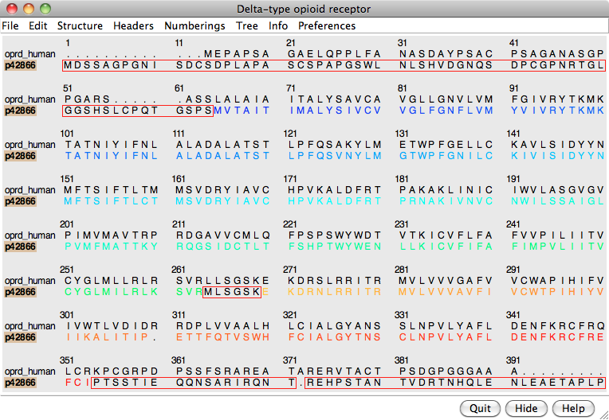

| template: μ-opioid receptor | target: δ-opioid receptor
(5 comparative models) |
This tutorial includes running Blast sequence search and Modeller comparative modeling calculations from Chimera. Internet connectivity is required to fetch data and to access Blast, Modeller, and other web services. Although no software installation (other than Chimera itself) is needed to follow the tutorial, Modeller use requires a license key. Academic users can obtain a license key free of charge by registering at the Modeller website.
See also: ways to generate comparative modeling inputs, mdaIn comparative (homology) modeling, theoretical models of a protein are built using at least one known related structure and a sequence alignment of the known and unknown structures. The protein to be modeled is the target, and a related known structure used for modeling is a template.
The target in this tutorial is the human δ-opioid receptor, a G-protein-coupled receptor (GPCR). GPCRs are transmembrane proteins and have been relatively resistant to structure determination. Although recent advances have allowed solving the structures of several members of this large and biomedically important class of proteins, at the time of creating this tutorial (May 2012), no structure was available for the δ-opioid receptor.
Tutorial caveats:

Start Chimera. A splash screen will appear, to be replaced in a few seconds by the main Chimera graphics window or Rapid Access interface (it does not matter which, the following instructions will work with either).
Choose File... Fetch by ID from the menu and use the resulting dialog to fetch the sequence of the target, the human δ-opioid receptor: UniProt ID oprd_human. If you want to verify the ID before fetching, click the Web Page button on the fetch dialog to see the corresponding page at UniProt. (One way to determine the ID in the first place is by searching at the UniProt site.)
The sequence is displayed in Multalign Viewer, and its UniProt feature annotations listed in the Region Browser. The S column checkboxes in the Region Browser can be used to show feature annotations as colored boxes in the sequence window. Close the Region Browser; it can be accessed any time from the sequence window Info menu.
The next step is to find a known protein structure suitable for use as a modeling template. We will use Chimera's Blast Protein tool to search the Protein Data Bank (PDB; a database of known structures) for sequences similar to the target. From the sequence window menu, choose Info... Blast Protein, click OK to use oprd_human as the query, and OK again to perform the search using default settings, including pdb as the database to search. Searching the pdb sequences should take only a few seconds. Searching the nr database, which also contains a huge number of sequences without known structures, would take much longer.
In the Blast results dialog, the hits are listed from best to worst. Click the Columns button to reveal several checkboxes for controlling which columns of information are shown. Hide (uncheck) Description, then show Resolution and Chain names. As shown in the figure, the two best hits are opioid receptors, followed by several other types of GPCRs. One technique for GPCR structure determination is to express the receptor as a fusion with some other protein that favors crystallization. The two best hits, PDB entries 4DKL and 4DJH, contain structures of opioid receptors fused with lysozyme.
It is possible to use multiple templates, but we will use just 4DKL_A (PDB entry 4DKL, chain A). The Chain names information says to “SEE REMARK 999,” which we will do after opening the structure. In the Blast results dialog, click to highlight the corresponding row, then at the bottom of the dialog:
REMARK 999 REMARK 999 SEQUENCE REMARK 999 CHAIN A IS AN INTERNAL FUSION OF LYSOZYME (RESIDUES 2-161 OF UNP REMARK 999 P00720) BETWEEN RESIDUES 52-263 AND RESIDUES 270-352 OF MU-TYPE REMARK 999 OPIOID RECEPTOR (UNP P42866). AN OFFSET OF 1000 HAS BEEN ADDED TO REMARK 999 LYSOZYME RESIDUE NUMBERS WITHIN THE COORDINATES TO DISTINGUISH THAT REMARK 999 PORTION OF CHAIN A. LYSOZYME RESIDUES ARE THEREFORE NUMBERED 1002- REMARK 999 1161.From this, we note:
Show the Chimera Command Line (for example, with Favorites... Command Line), hide atoms, rainbow-color the ribbon, and make the lysozyme portion dark:
Command: ~display
Command: rainbow
Command: alias lyso :1002-1161
Command: color dim gray lyso
GPCRs have an extracellular N-terminus, seven transmembrane helices, and an intracellular C-terminus. Visually tracing the structure from N-terminus (blue) to C-terminus (red) reveals that lysozyme is inserted between the fifth and sixth transmembrane helices, in the third intracellular loop.
Comparative modeling requires a template structure and a target-template sequence alignment. The sequence alignment is important; it controls which residues in the template are used to model which residues in the target, and any inaccuracies in the alignment will result in the application of incorrect constraints during 3D modeling. Regardless of how the sequence alignment was obtained, it should be examined and adjusted as needed before initiating the more computationally intensive 3D modeling calculations.
An alignment was generated above as a by-product of the Blast similarity search. However, Blast is meant to identify local similarities quickly rather than to give accurate full-length alignments. View the Blast alignment to see if it looks reasonable.
In general, if a Chimera window or dialog is obscured by other windows, it can be accessed using its instance near the bottom of the Tools menu, or from the Active Dialogs section of the Rapid Access interface (itself shown by clicking the lightning bolt icon near the bottom of the main Chimera window).
Use the sequence window Headers menu to hide the Consensus and Conservation lines, then scroll or resize the window to show the whole alignment. A large part of the query (target) sequence is not aligned. To understand what happened, try coloring the structure sequence to match the ribbon display: from the sequence window menu, choose Preferences... Appearance and in the resulting dialog, change the multiple alignments Color scheme to ribbon. As shown in the figure, the coloring reveals that the alignment includes the first five transmembrane helices but cuts off in the lysozyme insertion. The rest of the structure sequence is omitted, leaving the rest of the query unaligned.
Thus the alignment from Blast is not adequate for modeling purposes, and the target-template sequence alignment must be generated in some other way. Click Quit to close the sequence alignment from Blast.
To generate the target-template sequence alignment, we will return to the original oprd_human (target) sequence and use the Needleman-Wunsch global alignment algorithm to add the sequence of the μ-opioid receptor (template). If the sequence window was closed, not to worry, the target sequence can be fetched again as described above or using a command:
Command: open uniprot:oprd_humanFrom the sequence window menu, choose Edit... Add Sequence. The resulting dialog contains tabs for different ways of obtaining the sequence.
In similar situations, it would usually be fine to add the template sequence From Structure. However, in this special case of a chimeric template protein, the structure sequence includes residues from another protein (lysozyme) that should not be in the alignment. Even deleting the residues from the structure, as will be done below, does not remove them from the structure sequence.
Instead, use the From UniProt tab and add ID p42866 (noted above for the μ-opioid receptor part of the structure) using default alignment parameters. The Region Browser will appear and can be closed.
Delete the lysozyme part of the template structure since only the μ-opioid receptor part is useful for modeling the δ-opioid receptor:
Command: delete lysoThe template structure still needs to be associated with the corresponding sequence in the alignment. Often sequences and structures will associate automatically, but in this case it is necessary to do it manually: from the sequence window menu, choose Structure... Associations and associate the structure 4DKL with the sequence p42866.
In the sequence window, the association is indicated with a tan box around the sequence name (tan is the default color of the structure). Red outline boxes enclose residues that are in the sequence but not in the associated structure. There are quite a few missing residues: stretches at both ends and a few in the third intracellular loop, which had been partly replaced by lysozyme. However, the residues that are present in the template structure, including all seven transmembrane helices, are well-aligned with the target.
If you find the sequence coloring difficult to view, it can be changed to some other scheme (such as all black) using Preferences... Appearance in the sequence window menu. This also allows changing sequence wrapping, font size, etc. Coloring the sequence to match the structure ribbon is only one of several approaches for sequence-structure mapping. For example:
From the sequence window menu, choose Structure... Modeller (homology) to open the Chimera interface to comparative modeling with Modeller. The target should be set to oprd_human. Click p42866 in the dialog to choose it as the template.
Click the Advanced Options button to reveal additional settings. Run Modeller via web service indicates using a web service hosted by the UCSF RBVI. No local installation is required to run the web service, but it is necessary to enter a Modeller license key, available free of charge to academic users upon registration at the Modeller website. After entering the license key, click OK to launch the calculation with default settings. Five comparative models will be generated.
The Modeller run may take several minutes and is handled as a
background task. Clicking the information icon  near the bottom of the Chimera window will bring up the
Task Panel,
in which the job can be canceled if desired.
near the bottom of the Chimera window will bring up the
Task Panel,
in which the job can be canceled if desired.
When the five models have been generated, they will be opened in Chimera and their evaluation scores shown in a Model List dialog. The models can be viewed individually or collectively by choosing rows in the dialog with the mouse. The different scores from Modeller use different criteria and will not necessarily agree on which models are best:
Although there is also a Chimera interface to Modeller for untemplated building and refinement, in this tutorial we will simply remove the termini and rescore the models.
Click into the sequence window, then move the cursor over the residues to see the corresponding structure residue numbers near the bottom of the window. In the comparative models (#1.1-5), Leu-46 is aligned with the first residue in the template structure and Arg-334 is aligned with the last residue in the template structure. Delete the termini in the comparative models that extend beyond the template:
Command: del #1:start-45,335-end
To rescore the models, choose Fetch Scores... zDOPE and Estimated RMSD/Overlap from the Model List menu. Rescoring uses a web service provided by the Sali lab at UCSF. After a minute or few, more favorable zDOPE values are obtained, along with the additional scores:
Command: ~modeldisp #0
Command: disp
Command: ~ribbon
Command: rangecol kdHydrophobicity min dodger blue mid white max orange red
Command: preset apply pub 1
Command: repr sphere